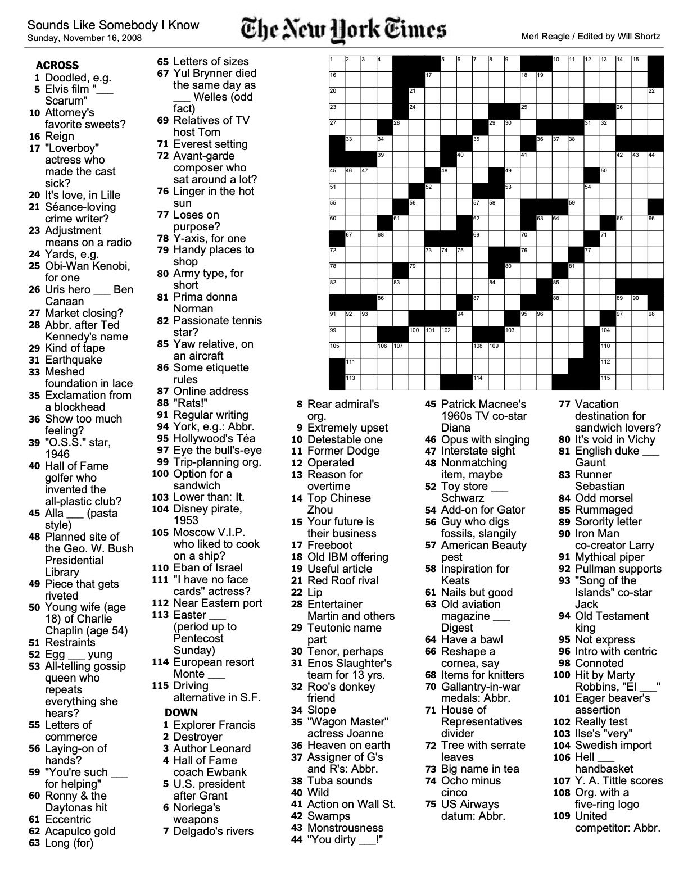
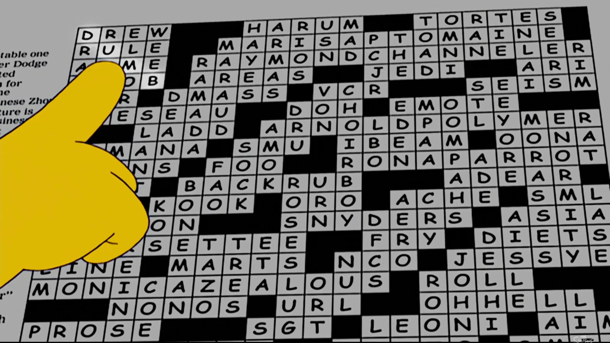
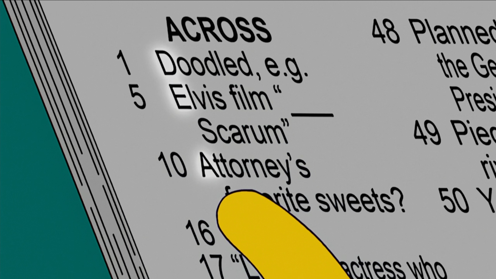

Grids created for productions
The Simpsons, "Homer and Lisa Exchange Cross Words"
Crossword “Sounds Like Somebody I Know” by Merl Reagle, New York Times, Nov. 16, 2008
See this puzzle at The Cross(word) Reference →
See this puzzle at The Cross(word) Reference →
Grid created for the episode and run in the Times the same day



